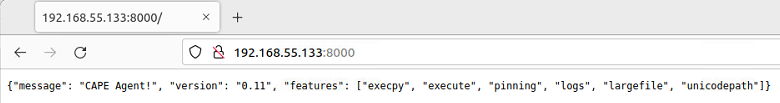

Installing the Agent¶
The CAPE agent is designed to be cross-platform, therefore you should be able to use it on Windows as well as on Linux and OS X. To make CAPE work properly, you’ll have to install and start this agent on every guest.
In the agent/ directory you will find an agent.py file, just copy it to the Guest operating system (in whatever way you want, perhaps in a temporary shared folder, downloading it from a Host webserver, or mounting a CDROM containing the agent.py file) and run it. This will launch the HTTP server which will listen for connections.
On Windows, if you simply launch the script, a Python window will be
spawned, with a title similar to C:\Windows\py.exe. If you want to hide this window you can rename the file from
agent.py to agent.pyw which will prevent the window from
spawning upon launching the script.
Don’t forget to test the agent before saving the snapshot. You can do it both navigating to VM_IP:8000 with a browser from your Host or be executing: curl VM_IP:8000. You should see an output similar to the following:

Prior To Windows 10¶
If you want the script to be launched at Windows’ boot, place the file
in the admin startup folder. To access this folder, open the app
launcher with Win+R and search for “shell:common startup” which
will open the folder you want (usually
C:\ProgramData\Microsoft\Windows\Start Menu\Programs\StartUp). Do
not place the agent in the user startup folder (usually
C:\Users\<Username>\AppData\Roaming\Microsoft\Windows\Start
Menu\Programs\Startup) as it will launch the agent without admin
privileges and therefore insufficient permissions resulting in the
agent not being able to work as intended.
Windows 10+¶
To start the script at boot, you will need to set the agent to be run
as a scheduler task. Dropping it in
C:\ProgramData\Microsoft\Windows\Start Menu\Programs\StartUp will
result in it being ran with improper privilege.
Open Windows menu (Win key) and search for Task Scheduler.
Select Create Basic Task from the action list.

Give the task a name (for example
pizza.pyw, the name is irrelevant as long as you don’t make any mention to CAPE or anything blatant for anti-VM detection algorithms) and click Next.Set the trigger as When I logon and click Next.
In the Action window, select Start a program and click Next.
In the Start a program window, select the path of the agent.py, and click Finish.
After the task is created, click the Task Scheduler Library and find the one you just created. Right click on it and select Properties.

In the general tab tell it to Run with highest privileges.

Select OK.
After that all is done, it will come up on the next restart/login.